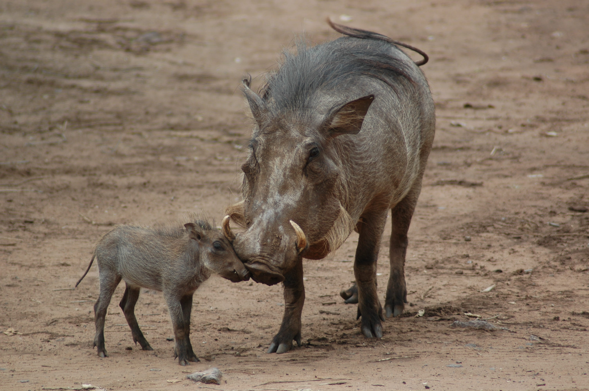

WARTHOG
DID YOU KNOW?
- Warthogs are often seen wallowing in mud baths. They do this not only to cool off but also to protect themselves from parasites and insects. The mud acts as a natural sunscreen and insect repellent.
- Warthogs are omnivorous and feed on a varied diet of grasses, roots, bulbs, fruit, and insects. They use their snouts and tusks to dig for underground food items, such as tubers and roots.
- Warthogs are skilled diggers and create burrows using their tusks and strong snouts. These burrows serve as shelter and protection from predators, as warthogs can quickly retreat into them when threatened.
- Despite their stocky appearance, warthogs are surprisingly fast runners and can reach speeds of up to 30 miles per hour (48 kilometers per hour) when threatened. If pursued by predators, they can quickly dart into their burrows for safety.
- Warthogs have adapted to their environment with several unique features. Their hunched back and short legs allow them to graze on grass while kneeling, and their facial warts, which are fatty deposits, provide some protection during combat with other warthogs.
WHERE YOU WILL FIND THEM?
You will find the warthogs at E10, next to the Elephants, on the East side of the zoo.